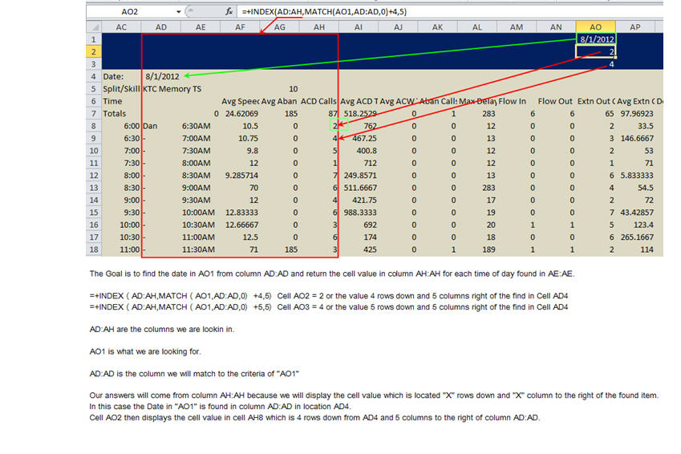

Formula's
- "Database" is all the data that you will pull from
- "Field" is the data that will be returned. Field is represented by the column number from left to right or header name can be used in "Quotes"
- "Criteria" is the criteria that you want to search for. Criteria can not have duplicate data in the same column.
- ( )
- * & /
- + & -
- =Left(A18,Find(",",A18)-1)
=Right(A18,Len(A18)-Find(",",A18))

We will sum Column "D" if Column "A" = Cell "H1" (21 + 23 + 22) = 66
- Note in the formula: (Product_A=H1) is rapped with parenthesis. This is a must do.
- Note the multiplier ( * ) is used between arguments instead of ( , )comma. This is because sumproduct recognized text as either True or False and multipling would cause an error.
We will sum Column "C" * "D" and then add the next data that meets the criteria.
"C2" = 2 * 21 "D2" = 42 +
"C3" = 2 * 23 "D3" = 46 +
"C7" = 2 * 22 "D7" = 44 = 132
Note this formula uses ( -- ) instead of using ( * ). This formula could have also been written like this:
=SumProduct((Product_A=H1)*C2:C7*D2:D7)
One is no more correct than the other.
Lets use the "AND" & "OR" operators with =SumProduct
When talking out the formula use + as the word ( or )
When talking out the formula use * as the word ( and )
(See: Leila explanation of SumProduct "AND & "OR" operators and how to use them.)
-
- There are a list of names in column "A". Manually type Daniel in "B1" and Patrick in "C1" and Carpenter in D1.
- Click on Cell "B1" and click on "Flash Fill" from the Data tab or Ctrl + E.
- All the first names will be auto filled down. Do the same for "C1" and "D1"
Note! - "F1" concatenates them back into one cell. Notice there are no spaces. You can add spaces like this.
=CONCATENATE($E$1,K1,$F$1,K1,$G$1) With this method you will need to add a space to cell K1
=CONCATENATE($E$1&" ",$F$1&" ",$G$1) -
- Highlight the range ("A9:G10").
- Type: =Transpose("A1:B7")
- Press: Shift+Ctrl+Enter
Now should a number in Range("B1:B7") change, the corresponding number in row 10 will change as well.
-
Hi all,
One of the lesser known (but useful) functions in Excel is the EXACT function. EXACT has just one purpose: compare text values exactly, taking into account upper and lower case:
=EXACT("abc","abc") // returns TRUE
=EXACT("abc","ABC") // returns FALSE
=EXACT("abc","Abc") // returns FALSE
How can the EXACT function be useful in the real world?
One example is a case-sensitive count. Normally to count text, the COUNTIF or COUNTIFS functions are good options. However, because these functions aren't case-sensitive, they won't work in this situation.
The trick is to use the EXACT function to compare the text, and the SUMPRODUCT function to count the results, as seen in the screen below:
Adds zero's to beginning of text. I used this to create SN for crystal
-
We will need a total of 9 digits. Zeros will be put infront of what ever number is in the cell.
Cell H20 contain the number 121. The goal will be to create a text of 000000121 which is a total of 9 numbers/text.
=rept(0,9-len(A1))&A1
Count 2 number in an array
=DGET(Database,Field,Criteria)
Advantages: Can be used like Vlookup and it can lookup to the left of the key column. Has the ability to use multiple criteria.
Disadvantages - If there are any duplicates you will get the error #NUM. You can not drag the formula down.
Filters or Filter in VBA may be a better choice if the you need to show multiple results.
ExcelJet (website)
The Order of Operator Precedence in Excel Formulas
-
Question: =(82-32)/5+8*2
Answer 26
82-32 = 50 Now divide 50 by 5 = 10
Plus 8*2 = 16 Which is 10 + 16 = 26
Simple Hierarchy:
Operations that are equal in precedence are performed left to right.
Sum a list of number but some contain a letter
Find all Characters Left or Right of the comma ,
=Find
Anything beside A,B,C,D would result in an error thus making the cell "".
=Sumproduct with text criteria (Link to Leila explanation of SumProduct)
-
Sumproduct
works by multipling two numbers in two different columns on the same row then adds the sum of the next two cells on the next row and so on. Lets look at two examples.
Example 1
Example 2
=SumProduct - How many Fridays are in the list in column "A" ?
-
The dates in column "A" are formated as dates.
In Cell C2 =SUMPRODUCT(--(TEXT(A2:A23,"dddd")=C1))
In Cell D2 =SUMPRODUCT(--(TEXT(A2:A23,"dddd")=D1))
=MOD
-
MOD is the remainder of two number. Thus
- 14 MOD 4 = 2
- 8 MOD 5 = 3
8 divide by 5 or (5 * 1 = 5) with a remainder of 3
=Countif
- =COUNTIF(A1:A10,100) '// count cells equal to 100
=COUNTIF(A1:A10,">32") '// count cells greater than 32
=COUNTIF(A1:A10,"jim") '// count cells equal to "jim"
=COUNTIF(A1:A10,"<"&B1) '// count cells less than value in B1
=Code
Here is another example using "Code"
=Choose (see Choose Function)
-
The value of "B5" could be a formula which would changed the output color. Looking at the picture if the value of B5 was 4 you would get an error because
there is no 4th color. So the value of "B5" is restricted to 3 out comes. Maximum # of Values is 254.
=Concatenate and (Flash Fill: (Ctrl + E) )
| Start with: |
Finish with: |
{=Frequency(data,intervals)}
Key Examples: Note! that =Frequency counts the number of time there is a number equal to or less than the targeted number in an array.
=FREQUENCY(B2:B10,D2)
Result: 2 ......So the target is D2 or 59 there are only 2 numbers in the array that are equal to or less than 59
More info on Frequency can be found here.
=VLOOKUP (vlookup guide)- - - - =HLOOKUP works the same way but horizontally
-
=vlookup(Look up what),(in what array),(in what column of the array is the answer), ("True"or "1" = exactmatch or closest lower number)("False" or "0" = Exact match only)
=vlookup(E1,A1:C1,3,0) ' In this example F1 would be Mobile. If I drag the formula "as is" to Cell G1 the formula would error. Here is a better way to write it.
=vlookup($E$1,$A1:C$1,COLUMN(C$1),False) ' In this example cell E1 stays the same plus the Array and Column "D" if dragged to column "G" are updated. Note! there are no "$" signs before the "C"'s
| A | B | C | D | E | F | G | |
| 1 | Dan | 949-633-9951 | Home | New 1 |
Amanda | =vlookup(E1,A1:C1,3,0) | |
| 2 | Edith | 949-633-9952 | Cell | Who knew | =vlookup($E$1,$A1:C$1,COLUMN(C$1),False) | =vlookup($E$1,$A1:D$1,COLUMN(D$1),False) | |
| 3 | Amanda | 949-633-9953 | Mobile | So what | |||
| 4 | Patrick | 949-633-9954 | Land Line | I care | |||
| 5 | Bella | 949-633-9955 | Twilight Zone | I dont |
=Vlookup that adds a prefix to what is being looked up. In this example we will look up a phone number and include the text "Phone:".
="Phone: " &Vlookup(C1,A1:B5,2,False) - - - This formula is in Cell D1
| A | B | C | D | |
| 1 | Dan | 949-633-9951 | Edith | Phone: 949-633-3448 |
| 2 | Edith | 949-633-9952 | ||
| 3 | Amanda | 949-633-9953 | ||
| 4 | Patrick | 949-633-9954 | ||
| 5 | Bells | 949-633-9955 |
=Index (Index and Match)
- Using Index to find data in a row and column.
{=index(AD:AH,Match(AO1,AD:AD,0)+4,5)}
Other examples:
{=index(Table1,Match(A1,Table1[Name],0)+Rows,Columns )}
{=INDEX(G1:J5,MATCH(M2&N2,G1:G5&H1:H5,0)+0,4) } Here we are matching 2 criteria M2 and N2 from the index range G1:J15.
We could say that the index range is G5:J5 and that we need to match M2 in G1:G5 and N2 in H1:H5 once found offset 0 rows and 4 columns.

=Sum
-
=sum(Cell+Cell) ' or other operators between cell and cell ( /, *, -, +)
=sumif(range,criteria, sum range)
=sumifs(sum range, criteria_range1,criteria1, criteria_range2, criteria2)
Sum 2d range with multiple criteria
-
Generic formula
=SUMPRODUCT(data*(range1=criteria1)*(range2=criteria2))
Explanation
To lookup and sum values in a 2D range with multiple criteria, you can use the SUMPRODUCT function. In the example shown, the formula in J6 is:
=SUMPRODUCT(data*(codes=J4)*(days=J5))
using named ranges as shown in the image.
IF Statements
- Font is color then
-
if range("a1").Font.Color = RGB(255, 255, 255) then
or
if range("a1").Font.Color = vbred then
' your code
end if
Clean up text in a cell
| A | B | C | |
| 1 | This line has spaces in front and at the end | =Trim(A1) fixes the spaces | =Trim(Clean(A1)) |
| 2 | This line has spaces in front and a line break |
=Clean(A1) fixes the line break | will fix both of these problems. |
| 3 |
=Len
- Len will count the Lenght. Here are more examples
=Left, Right, Mid
- Finding data in a string. - - - Ablebits.com
=MID(A3, SEARCH("Lot",A3) +4, SEARCH("Lot",A3,SEARCH("Lot",A3)+1) - SEARCH("Lot",A3) - 4)
This searches from "Lot" to Lot" and return what ever is in between these two words.

=Replace
- In this example "A2" is the original text.
17 is the number of spaces from the left where we will start inputing text.
4 is the number of spaces that will get replaced. Since guys is 4 character we use 4
"Gym" is what will be added to the old text.
If you add a space so "Gym" now is "Gym " and change 4 to 0 your results will be:
"This is the old Gym guys house"
=Rank (See Rank Function)
- Example of Ranking students and grading there scors
=Substitute
- =SUBSTITUTE(A1,9,8,4)
This says substitute 9 in cell A1 with 8 in the fouth instance of 9.

=Transpose & (Transpose Live({=TRANSPOSE(A1:B7)}))
Transpose a range. Highlight a range and copy. Right click on another cell and paste Transpose.
We want the numbers in Row 10 (the transposed numbers) to change if the number in column B1:B7 change.
Exact